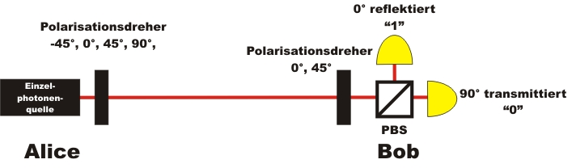

Die Demonstrationsexperimente zur Quantenkryptographie wurden von der Robert Bosch Stiftung gefördert.
Quantenkryptographie
Übersicht
Kryptographie ist die Kunst eine Nachricht so zu verschlüsseln, dass sie für fremde Personen unlesbar und ohne jeglichen Informationsgehalt ist. Die sichere Übermittlung sensibler Informationen ist seit jeher ein Grundbedürfnis jeder Gesellschaft. Erste Hinweise auf die Verschlüsselung von Schriftstücken finden sich bereits bei den alten Ägyptern. Im Mittelalter waren in ganz Europa zum Schutz des Briefverkehrs vielfältige Geheimschriften im Gebrauch. Zur Zeit des zweiten Weltkrieges wurden elektro-mechanische Verfahren, wie z. B. die Enigma, zur Übertragung von sensiblen Kriegsinformationen benutzt. Im heutigen computerbasierten Datenverkehr werden mathematische Verschlüsselungsverfahren wie z. B. das Public - Key - Verfahren eingesetzt. Die Sicherheit dieser Verschlüsselung beruht auf mathematischen Algorithmen. Eine sehr schöne Übersicht über den geschichtlichen Wettlauf von Code-Erfindern und Code-Knackern findet sich im Buch von S. Signh [Sig01] oder von A. Beutelsbacher [Beu07].
Trotz vielfältiger und oft geheimer militärischer Forschung gibt es bisher kein klassisches Kryptographieverfahren, das in der praktischen Anwendung absolute Sicherheit bieten kann. Einen Ausweg aus dem Dilemma bietet die Quantenphysik. Mit Hilfe von einzelnen Quanten können Informationen mit 100% Sicherheit übertragen werden. Die Sicherheit beruht bei der Quantenkryptographie nicht auf mathematischen Verfahren, sondern auf den Grundgesetzen der Quantenphysik. Erste Quantenkryptographiesysteme sind bereits kommerzeill im Handel erhältlich [IdQ08] und werden z. B. in der Schweiz zur Übertragung von wichtigen Informationen serienmäßig eingesetzt [Pat07].
| Grundlagen: | |
Kapitel 1: |
Verschlüsselung mit dem One-Time-Pad |
Kapitel 2: |
Schlüsselverteilung mit einzelnen Photonen |
Kapitel 3: |
Schlüsselverteilung mit Nachweis eines Spions |
| Fortgeschritten: | |
Kapitel 4: |
Ablauf, Forschung und Einzelphotonenquelle bei der Quantenkryptographie |
Kapitel 5: |
Quantenkryptographie mit verschränkten Photonenpaaren |

Versuchsaufbau zur Quantenkryptographie mit einzelnen Photonen
Die Demonstrationsexperimente zur Quantenkryptographie wurden von der Robert Bosch Stiftung gefördert.